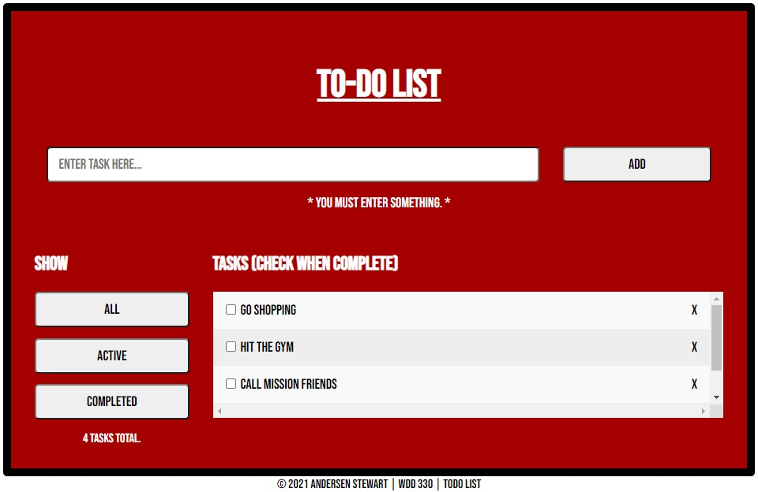
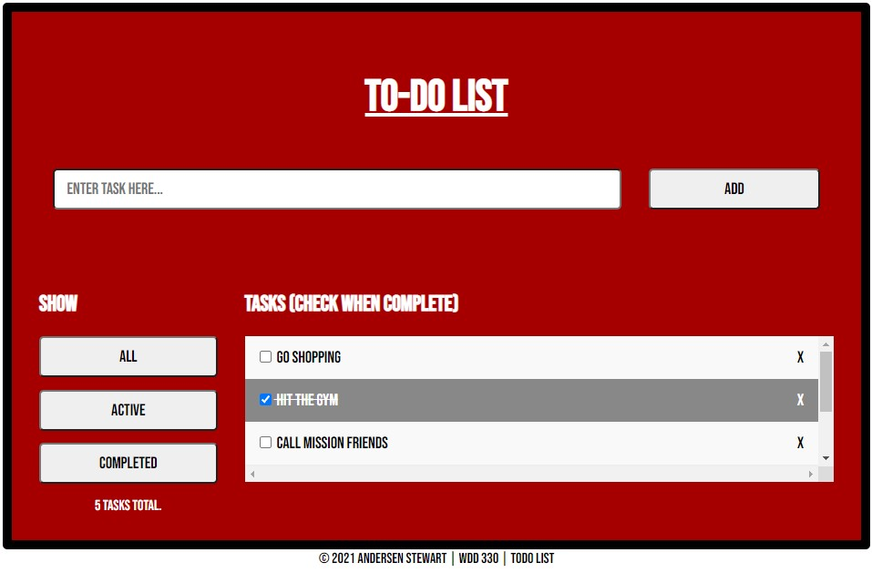
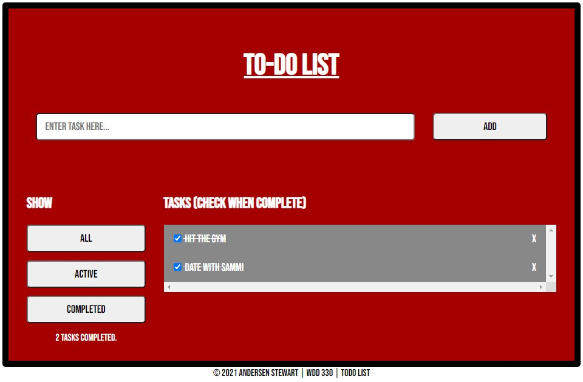

Descriptions
-
TODO List - This project is a web application that allows the user to
add tasks to complete throughout the day. Each task is stored in an array, but
the array is kept within localStorage. Filters are also provided to display the
user's tasks based on completion.
This Week's Highlights


